추가정보 - 소요시간: 전체 관람시 대략 1시간 ~ 1시간 30분정도
- 추천 준비물: 모자, 양산, 물
* 편안한 신발을 신고 가세요 :)
들어가는 길
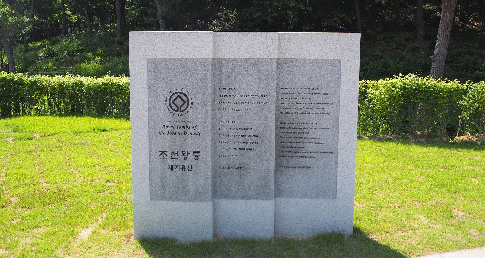
영릉(英陵)과 영릉(寧陵)은 '조선왕릉'으로서 2009년 세계 유네스코 문화유산에 등재되었습니다.
입구 초입에 보이는 이 비석은 세계가 인정하는 자랑스러운 우리 문화재임을 다시 한 번 알려줍니다.
1. 입구- 세종대왕 역사문화관
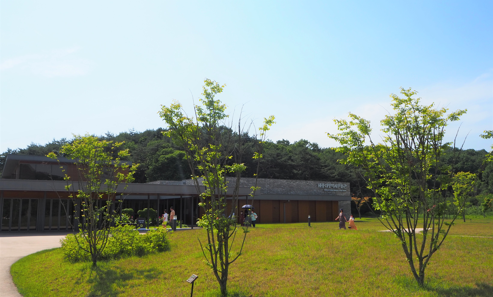
입구로 들어가면 현대적인 건물이 눈에 들어옵니다.
바로 '세종대왕역사문화관' 인데요, 현재는 코로나19로 모든 궁과 능의 실내관람이 중단된 관계로 관람은 불가합니다.
세종대왕과 효종대왕의 업적, 조선왕릉에 대한 자세한 소개, 그리고 국장도감의궤등에 대해 다양한 매체로 전시한다고 하니 코로나가 끝나고 꼭 방문해보면 좋을 것 같습니다.
2. 직진 후 우측 - 세종대왕 동상
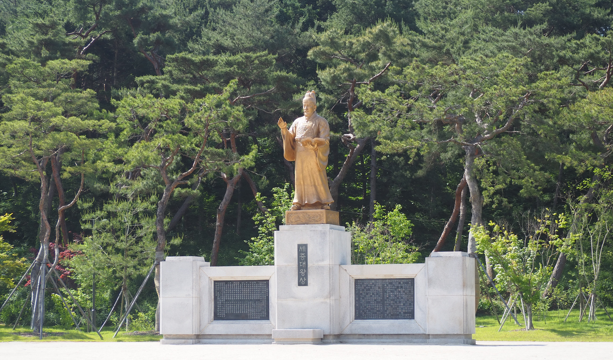
매표소를 지나 길을 따라 걷다보면, 우측에 큰 공터와 함께 세종대왕의 동상이 있습니다.
조선 역사 상 가장 많은 업적을 남기고, 한국인이 가장 많이 존경하는 조선의 왕인 세종대왕의 위엄이 느껴집니다.
3. 세종대왕 동상의 좌우 - 과학기구
동상의 좌우에는 세종대왕 시절 발명된 많은 과학 기구들이 전시되어있습니다.
천문관측기구인 혼천의, 간의, 시간을 알려주는 해시계, 자격루, 강수량을 측정하는 측우기, 그리고 천상열차분야지도 등 책에서만 보면 문화재들의 모형을 가까이서 하나하나 살펴볼 수 있습니다.
많은 과학기구들을 한 곳에 모아서 보면서 세종대왕이 얼마나 우리의 과학 발전에 많은 노력을 했는지 이해할 수 있습니다.
* 또 하나의 재미! 해시계가 가리키는 시간과 핸드폰의 시간을 비교해보세요 :)
4. 직진 후 우측 - 재실
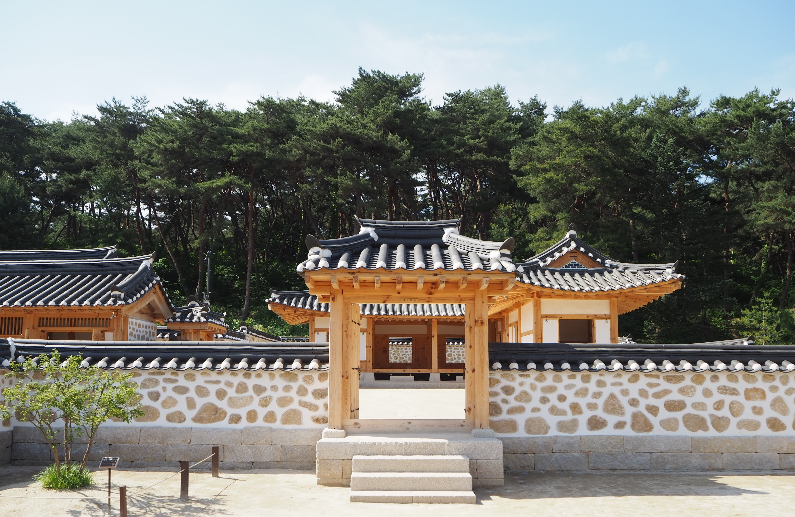
많은 과학기구들을 지나 외길을 지나 우측에 보이는 기와집이 바로 '재실'입니다.
재실은 왕릉을 관리하는 사람이 지내거나 제향을 지낼 때는 제관들이 머물렀던 곳입니다.
또한 제향을 준비하기도 하고 제기와 축문, 곡물 등을 보관하는 장소로도 사용되었다고 합니다.
이 재실은 2018년 부터 2020년까지 발굴조사 및 문헌을 참고하여 진행된 세종대왕릉 복원 사업 때 원래의 재실의 위치와 형태에 맞게 새로 건축되었습니다.
아래의 사진에서 볼 수 있듯, 안쪽에는 제사 당시 입었던 의복과 제례 용기들을 전시하고 있습니다.
현재에도 매년 4월 8일 세종대왕의 기일과 4월 28일 소헌왕후의 기일에는 전주이씨 대동종약원의 주관으로 기신제가 거행된다고 합니다. 지금까지도 이어지는 제례는
조선왕릉이 세계유산에 등재된 이유 중 하나이기도 합니다.
또한 5월 15일에는 세종대왕 탄신을 기념하는 국가제향인 숭모제전이 진행되고, 10월 9일 한글날에는 한글날 경축 행사를 진행하여 한글 창제와 관련된 공연, 전시, 체험 등이 진행됩니다.
평소에 방문해도 좋지만, 위 날짜와 같이 특병한 행사를 진행하는 날에 방문해 보아도 좋을 것 같습니다.
(코로나의 상황에 따라 행사는 변경될 수 있습니다. 확인 후 방문하세요.)
4. 직진 후 우측 - (구) 재실 - 작은책방
재실을 지나 조금 더 길을 따라가면, 앞선 건물보다는 세월의 흔적이 느껴지는 기와집이 있는데, 이는 (구) 재실입니다.
(구) 재실은 1971년 영릉성역화 사업 때 만들어져 현재의 재실이 만들어지기 전까지 사용되던 재실입니다.
급하게 건축하다 보니 본래의 재실의 위치도 아니고, 형태도 달랐기 때문에 복원공사 때 새로운 재실이 만들어진 것 입니다.
새로운 재실이 만들어졌지만, (구) 재실도 허물지 않고 '작은책방'을 운영중입니다. 작은 책방에는 문화재와 일반 도서 등 약 500여권의 책이 있어
누구나 책을 읽고, 휴식을 할 수 있는 공간을 마련하였습니다.
대청마루에서 시원한 바람을 맞으며 책을 읽다보면 마치 선비가 된 듯한 기분이 들기도 합니다.
* 또 하나의 재미! 작은 책방, (구) 재실에서 책을 읽으며 고요함과 평화로움을 느껴보세요 :)
4. 재실의 맞은 편 - 연지
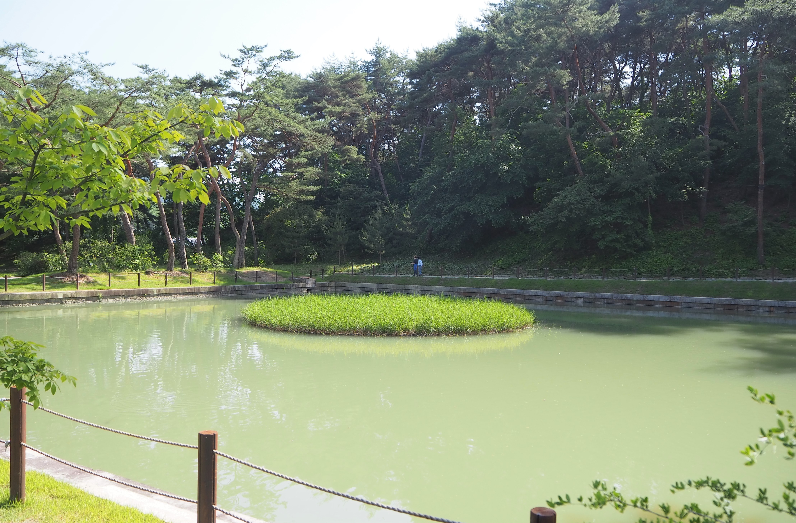
(구) 재실의 맞은편에는 작은 연못인 '연지'가 있습니다. 연지는 왕릉의 경관적 아름다움을 더하고, 풍수지리적으로 부족한 부분을 보완하는 기능을 합니다.
또한 용수를 공급하고, 화재시 용수를 공급하는 역할도 한다고 합니다.
* 조선 궁궐 속 연못과 같이 땅은 사각형이고 하늘은 원형이라는 '천원지방' 사상이 담겨 있어요.
세종대왕 英陵 (영릉)
1. 직진 - 홍살문
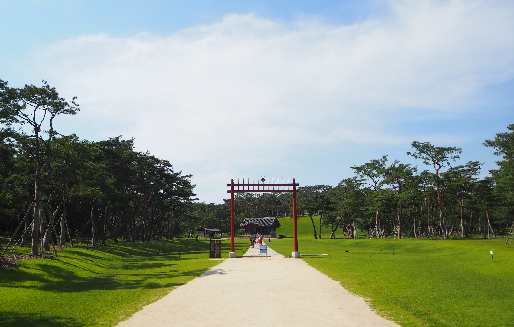
이제 저 멀리 언덕같은 릉이 보이기 시작합니다. 릉으로 들어가기 앞서 '홍살문'을 지나야 합니다.
홍살문은 서원이나 향교, 능 앞에 설치되는 문으로 청정하고 신령스런 공간이라는 상징성을 부여합니다. 따라서 아무리 신분이 높은, 심지어 왕일지라도 홍살문을 지나서는
가마에서 내려서 걸어가야 했다고 합니다. 또한 붉은 색은 악귀를 쫓는다는 의미를 지닙니다.
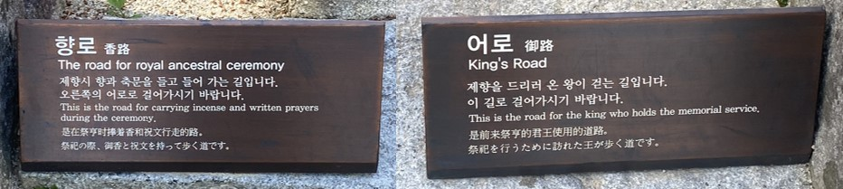
정면에 보이는 정자각으로 가는 길은 '향어로'입니다. 이는 왼쪽의 향과 축문을 들고 가는 길인 '향로'와 오른쪽의 왕이 걷는 길인 '어로'를 합친 이름입니다.
향로는 혼령이 지나는 길로, 관람객은 어로로 지나야 한다고 합니다.
2. 길의 좌우
길의 좌우에는 너른 잔디와 큰 소나무들이 숲을 이루고 있습니다.
정자각의 양쪽의 건물은 각각 제향에 필요한 음식을 만드는 '수라간'(정자각을 등지고 오른쪽)과 을 능을 지키는 수복들이 머무는'수복방'(정자각을 등지고 왼쪽)입니다.
수복방 앞에 있는 큰 소나무가 그 자태를 뽐내고 있습니다.
3. 직진후 정면 - 정자각
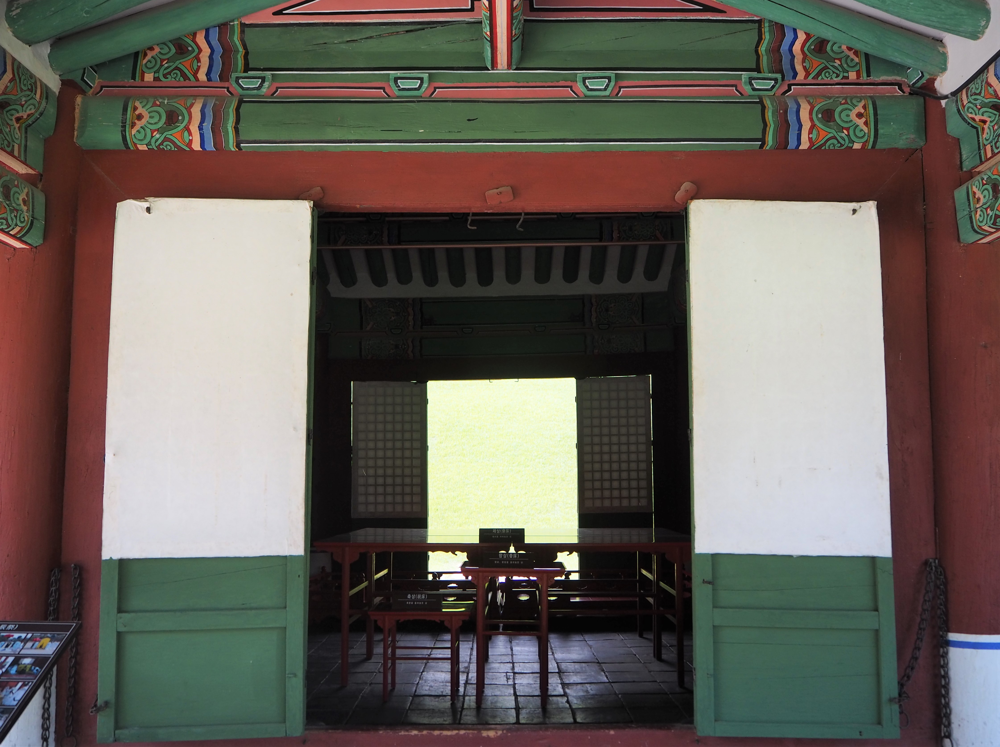
정면에 보이는 단청이 칠해진 건물은 제향을 지내는 '정자각'입니다.
정자각 앞에는 기신제의 과정과 사용되는 제기류 등에 대한 설명문이 있습니다.
3. 영릉을 바라봤을 때 왼쪽 - 도래솔길
정자각과 수라간을 지나, 능의 왼쪽으로 가면 영릉에 조금 더 가까이 갈 수 있는 '도래솔길'이 나옵니다.
예전에는 봉분의 위를 걸어 올라갔지만, 현재는 문화재 보존을 위해 둘레길을 만들었다고 합니다.
* 길 곳곳에 있는 관람동선 안내판을 잘 보고 따라가세요 :) 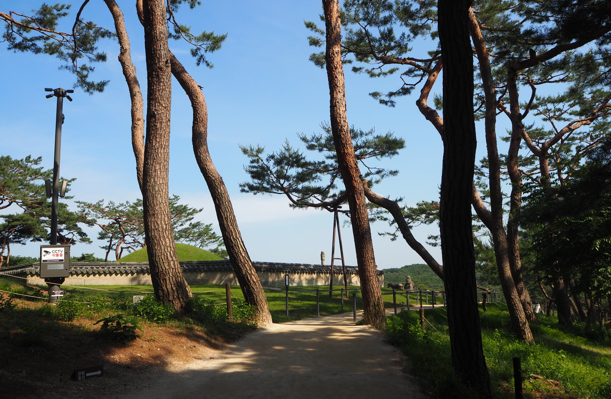
길을 따라 올라가다 보면 능이 조금씩 보이기 시작합니다. 봉분의 둘레에 둘러있는 담장인 '곡장'이 능을 보호하고 있습니다.
5. 세종대왕 영릉(英陵)
드디어 저 아래 멀리서부터 보이던 능에 가까이 왔습니다.
영릉(英陵)은 조선전기 왕릉 배치의 기본이 되는 능으로, 무덤 배치는 <국조오례의>에 기록된 제도를 따랐습니다.
또한 이 능은 봉분은 하나지만, 내부에 석실 2개를 붙인 조선왕릉 최초의 '합장릉'입니다. 이는 능 앞에 탁자처럼 보이는 '혼유석'이 2개인 것을 통해 확인할 수 있습니다.
혼유석 외에도 능 앞에는 석마,석호,석양, 문·무석인, 정명등, 망주석 등 다양한
세종대왕과 소헌왕후의 능은 처음부터 이곳 여주에 있진 않았습니다.
원래는 당시의 광주, 지금의 서울시 서초구의 '헌릉' (태종의 능)의 서쪽 산줄기에 조성되었습니다. 세조 때에 능을 옮기자는 주장이 있었지만 시행되지 않다가, 예종 때 (1459) 지금의 위치로 천장하였다고 합니다.
위치를 옮긴 지금의 여주 영릉은 풍수지리적으로 굉장히 뛰어나다고 합니다.
능의 뒤쪽으로는 수려한 산세와 나무들이 조성되어 있고, 앞쪽으로는 탁 트인 경관이 맞이합니다.
앞쪽으로 멀리 보이는 산은 '북성산'이라고 합니다.
왕의 숲길
* 실제로 왕의 숲길에서 녹음한 소리입니다.
비대면 관람중이시라면 소리를 함께 들어보세요 :)
1. 영릉을 바라봤을 때 오른쪽
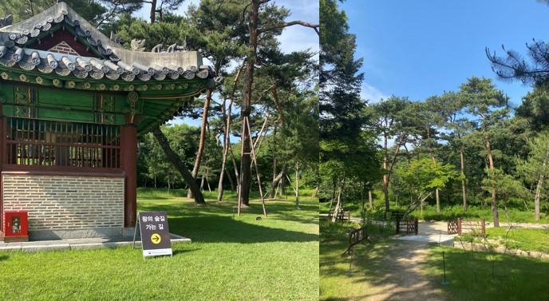
영릉의 둘레길을 내려온 뒤, 반대편인 수복방의 옆 길을 따라가다보면 '왕의 숲길'이 나옵니다.
* 이 곳 역시 화살표로 길을 잘 안내해주고 있어 쉽게 길을 찾을 수 있습니다.
2. 나무문을 지나서 왼쪽
'왕의 숲길'은 세종대왕 영릉과 효종대왕 영릉을 연결하는 길입니다.
실제 조선시대에 숙종, 영조, 정조가 효종대왕 영릉(寧陵)에 먼저 참배하고 나서, 세종대왕 영릉(英陵)에 참배할 때 지났던 길이라고 합니다.
이 길은 안전상의 문제로 개방 시간이 짧습니다. 계절마다 개방 시간이 조금씩 다르니 꼭 확인해보고 방문하시길 바랍니다.
3. 외길 - 왕의 숲길
왕의 숲길은 약 700m로 길지는 않지만, 이때까지 걸었던 다른 길 보다는 경사가 있는 편입니다.
큰 나무들이 우거져 그늘을 이루고, 다양한 새소리가 들리는 이 길을 걷다보면 마음이 편안해지는 것을 느낄 수 있을 겁니다.
걷고 있는 이 길을 몇 백 년 전 실제 역사 속 왕이 지났다고 생각하니, 마치 그 시간 속에서 걷고 있는 것 같기도 해 특별한 기분이 듭니다.
가능하다면, 영릉에 방문했을 때 꼭 왕의 숲길도 걸어보는 것을 추천합니다.
* 추천: 곳곳에 의자가 있습니다. 걷다가 잠시 앉아 나뭇잎 사이로 비치는 햇빛을 구경해보세요 :)
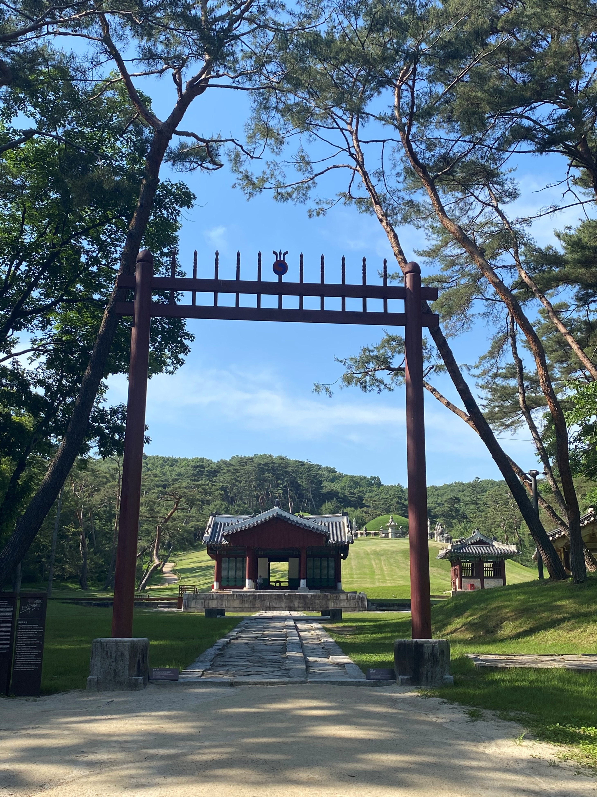
효종대왕릉에도 세종대왕릉과 동일하게 홍살문과 향로, 어로가 있습니다.
중앙의 정자각, 오른쪽의 수랏간, 왼쪽의 수복방까지 조선왕릉의 구성을 그대로 따르고 있습니다.
2. 직진 - 금천교
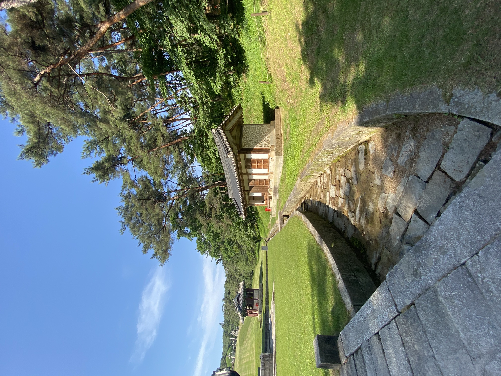
다른 왕릉과의 차이점이 있다면, 바로 금천교의 위치입니다.
금천교는 궁궐 안에도 있는데, 능의 금천교는 왕의 혼령이 머무는 신성한 공간과 속세의 공간을 구분해 주는 경계의 역할을 합니다.
일반적으로 조선왕릉의 금천교는 홍살문 밖에 위치하는데, 효종대왕릉의 금천교는 유일하게 홍살문 안에 위치하는 것이 특징입니다.
이는 본래의 지형을 최대한 살려서 능을 조성했기 때문입니다.
3. 정자각의 왼쪽길 -
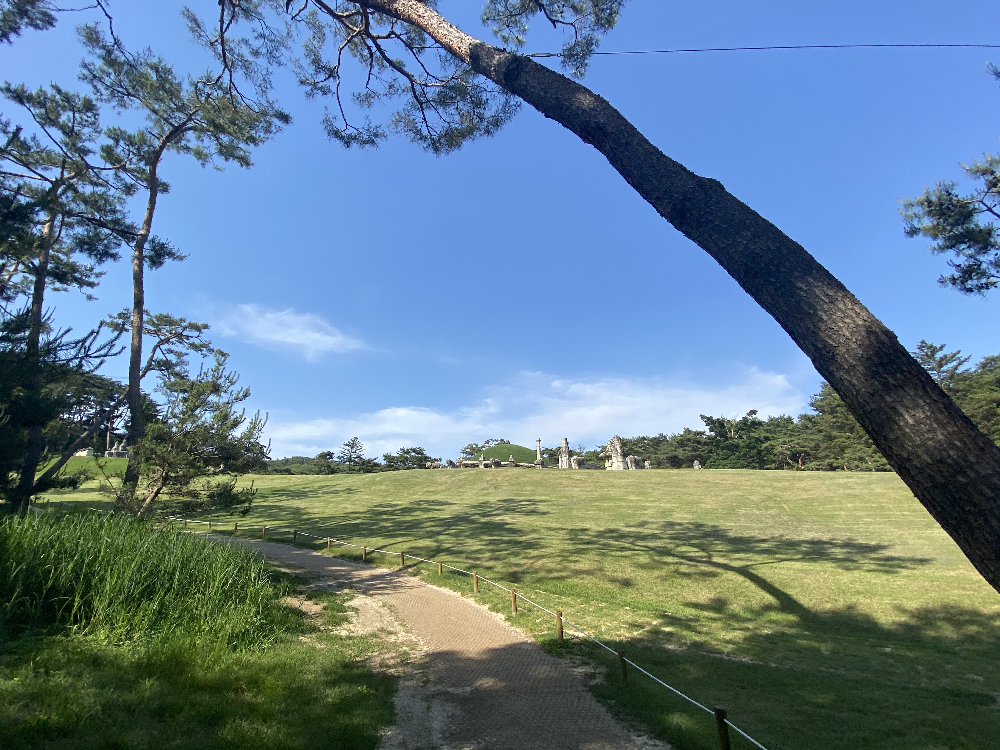
효종대왕 영릉 역시 보존을 위해 둘레길을 만들어 놓았습니다.
길의 오른쪽으로는 효종대왕과 인선왕후의 능이 보입니다. 합장릉이었던 세종대왕 영릉과 달리, 효종대왕 영릉은 왕과 왕비의 능이 상하로 조영되어 있습니다.
이는 풍수지리적 이유에 따른 것인데, 위쪽의 곡장이 둘러진 능이 효종대왕의 능이고 아래쪽의 능이 인선왕후의 능입니다.
이러한 능을 '동원상하릉'이라고 하는데, 효종대왕 영릉은 조선 최초의 동원상하릉이라고 합니다.
4. 외길 - 효종대왕과 인선왕후의 능
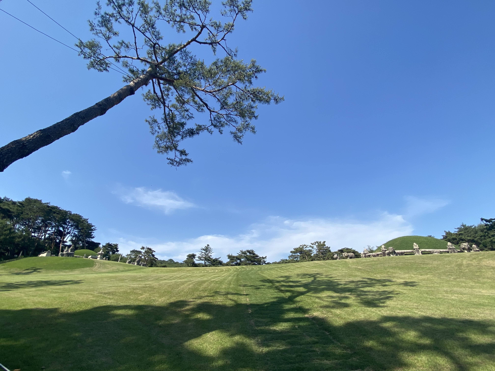
효종대왕릉 역시 처음부터 이곳 여주에 위치한 것은 아니었습니다. 처음엔 지금의 구리시에 있는 건원릉의 서쪽에 조성했는데, 병풍석에 틈이 생겨 빗물이 스며들 수 있다는 문제가 제기되어
현종 때에 (1673년) 이곳 여주로 천장하였습니다. 이후 인선왕후가 돌아가신 뒤 앞쪽으로 새로운 봉분을 만들어 지금의 동원상하릉 향식이 되었다고 합니다.
*
5. 홍살문에서 나와서 직진 - 재실
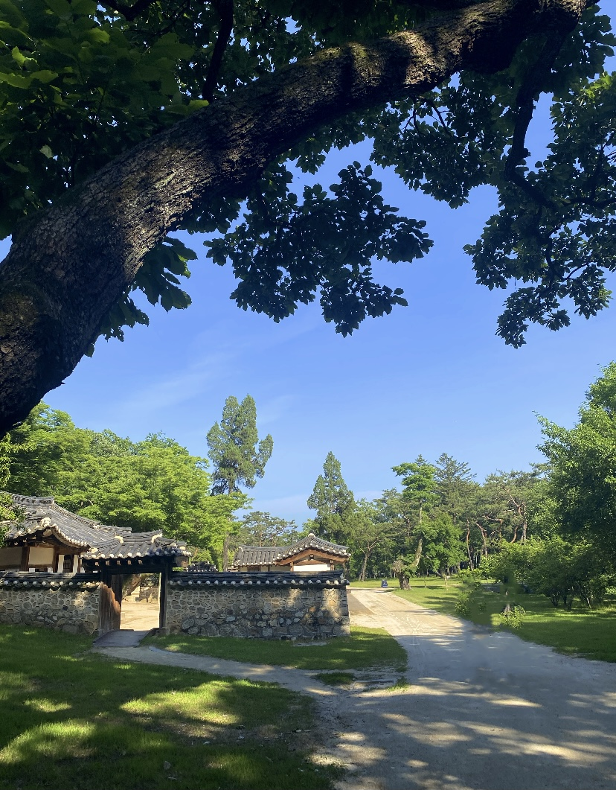
효종대왕릉의 재실은 이곳 여주로 능을 옮길 때 함께 이건된 것으로, 조성왕릉 재실 중 유일하게 보물로 지정되어 있습니다.
대부분의 조선왕릉은 일제강점기와 6.25 전쟁으로 소실되거나, 훼손된 경우가 많은데 효종대왕릉의 재실은 원형 그대로를 가장 잘 유지하고 있고, 공간구성과 배치가 뛰어나기 때문입니다.
사진의 느티나무는 이 재실이 지어지기 전부터 있었던 나무라고 합니다. 크고 오래된 나무는 이곳 재실과 잘 어우러져 있습니다.
또한 사진에는 없지만, 이곳에는 300년 이상 된 천념기념물인 '회양목'이 있습니다. 회양목은 아파트 단지나 여러 곳에 조경목으로 사용되는 낮고 둥근 나무인데,
이 회양목처럼 큰 크기의 나무는 드물어 생물학적, 역사학적으로 높은 가치를 갖는 것이라고 합니다.
* 재실의 안쪽에 있는 회양목을 꼭 찾아보세요 :)
6. 재실에서 나와서 - 두 갈래 길
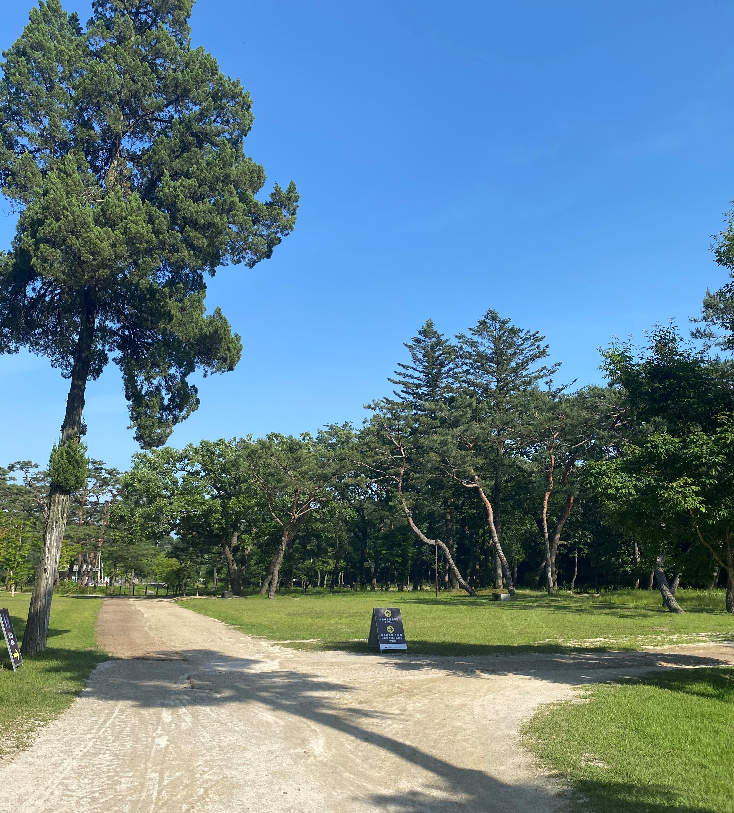
재실에서 나와 직진하면 두 갈래의 길이 나옵니다. 직진하면 효종대왕릉 입구 (출구)가 나오고, 오른 쪽 길로 가면 들어왔던 세종대왕릉 입구(출구)로 갈 수 있습니다.
원하는 방향에 따라 선택해서 가면 됩니다.
(대중교통을 타고 여주역으로 간다면 효종대왕릉 입구에서 950번 버스를 기다리면 됩니다.)
7. 직진 길 - 연지
세종대왕 영릉과 마찬가지로 연지가 형성되어 있습니다.
연지를 끝으로, 세종대왕 영릉부터 왕의 숲길을 지나 효종대왕 영릉까지 둘러볼 수 있습니다.
이곳, 여주 영릉에서 고즈넉한 길을 걸으며 오감을 느끼고 마음의 안식을 찾아보시길 바랍니다 :)


 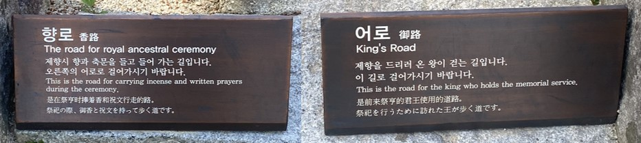
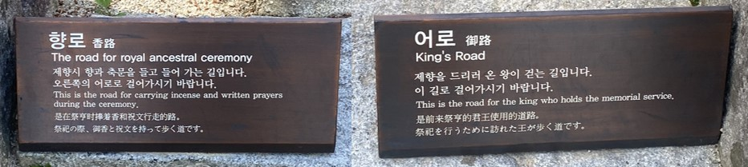